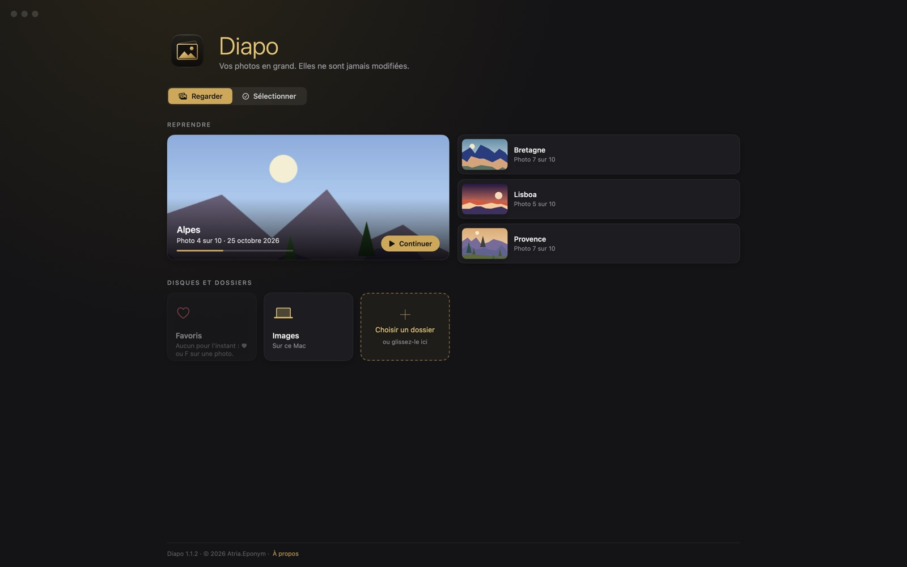
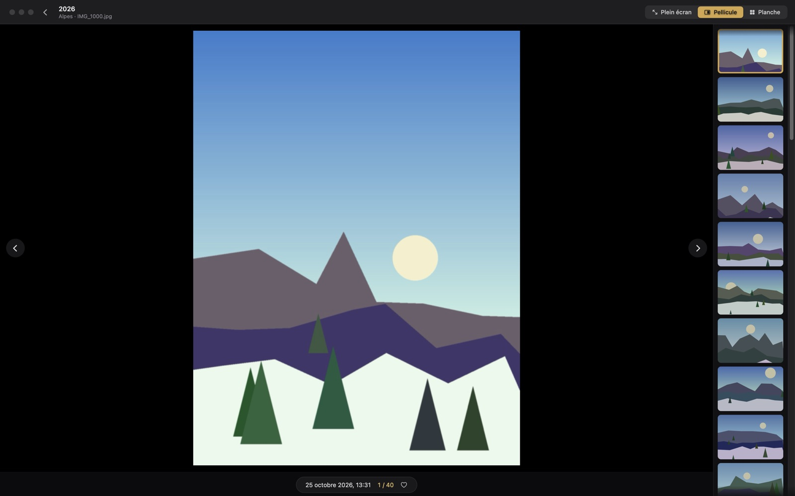
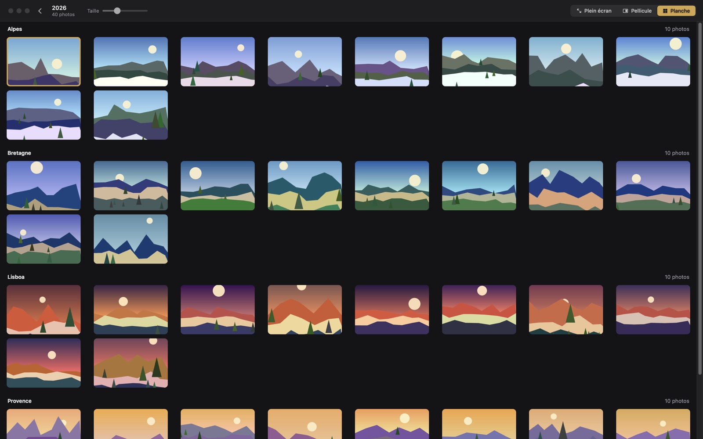
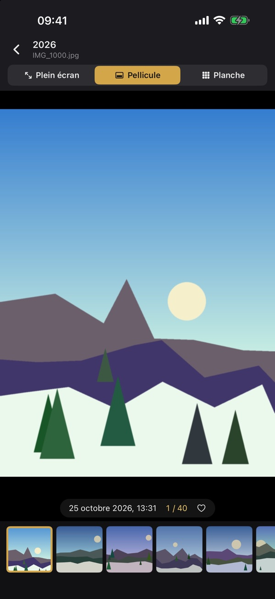

Diapo
Vos photos en grand
Diapo affiche en grand les photos d'un dossier ou d'un disque entier, sous-dossiers compris. Vous passez d'une photo à l'autre avec les flèches du clavier, et vos photos ne sont jamais modifiées.





Essai gratuit de 14 jours (15 jours sous Windows), puis un achat unique pour continuer. Pas d'abonnement. Pas de publicité, pas de pistage, pas de compte.
Disponible en 28 langues.